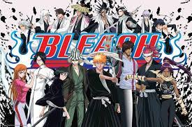
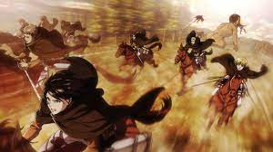
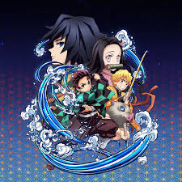
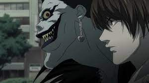
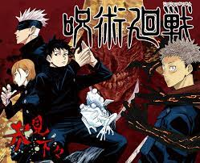

List of Best anime

Naruto
Dragon Ball
One Piece
Other Top 10 Best anime series of all time
1.My hero acedemia

My Hero Academia (Japanese: 僕のヒーローアカデミア, Hepburn: Boku no Hīrō Akademia) is a Japanese superhero manga series written and illustrated by Kōhei Horikoshi. It has been serialized in Shueisha's shōnen manga magazine Weekly Shōnen Jump since July 2014, with its chapters additionally collected into 36 tankōbon volumes as of October 2022. Set in a world where superpowers (called "Quirks") have become commonplace, the story follows Izuku Midoriya, a boy who was born without a Quirk but still dreams of becoming a superhero himself. He is scouted by All Might, Japan's greatest hero, who bestows his Quirk to Midoriya after recognizing his potential, and helps to enroll him in a prestigious high school for superheroes in training.
2.Bleach
Bleach (stylized as BLEACH) is a Japanese anime television series based on Tite Kubo's original manga series of the same name. It was produced by Studio Pierrot and directed by Noriyuki Abe. The series aired on TV Tokyo from October 2004 to March 2012, spanning 366 episodes. The story follows the adventures of Ichigo Kurosaki after he obtains the powers of a Soul Reaper—a death personification similar to the Grim Reaper—from another Soul Reaper, Rukia Kuchiki. His newfound powers force him to take on the duties of defending humans from evil spirits and guiding departed souls to the afterlife. In addition to adapting the manga series it is based on, the anime periodically includes original self-contained storylines and characters not found in the manga.
3.Tokyo Ghoule

Tokyo Ghoul (Japanese: 東京喰種トーキョーグール, Hepburn: Tōkyō Gūru) is a Japanese dark fantasy manga series written and illustrated by Sui Ishida. It was serialized in Shueisha's seinen manga magazine Weekly Young Jump between September 2011 and September 2014, and was collected in fourteen tankōbon volumes. A prequel, titled Tokyo Ghoul [Jack], ran online on Jump Live in 2013 and was collected in a single tankōbon volume. A sequel, titled Tokyo Ghoul:re, was serialized in Weekly Young Jump between October 2014 and July 2018, and was collected in sixteen tankōbon volumes. A 12-episode anime television series adaptation produced by Pierrot, aired on Tokyo MX from July to September 2014. A 12-episode second season, titled Tokyo Ghoul √A (pronounced Tokyo Ghoul Root A), which follows an original story, aired from January to March 2015. A live-action film based on the manga was released in Japan in July 2017, with a sequel being released in July 2019. An anime adaptation based on the sequel manga, Tokyo Ghoul:re, aired for two seasons; the first from April to June 2018, and the second from October to December 2018.
4.Attack on Titan
Attack on Titan (Japanese: 進撃の巨人, Hepburn: Shingeki no Kyojin, lit. 'The Attack Titan') is a Japanese dark fantasy anime television series, adapted from the manga of the same name by Hajime Isayama, that premiered on April 7, 2013. It has aired on NHK General TV in Japan,[g] and Aniplus Asia in various Asia-Pacific countries.[h] In the United States and Canada, the series has been streamed on Crunchyroll, Funimation, Netflix, Amazon Prime Video, and Hulu. Attack on Titan has also aired on Adult Swim's Toonami programming block in the U.S. Set in a post-apocalyptic world where the remains of humanity live behind walls protecting them from giant humanoid Titans, Attack on Titan follows protagonist Eren Jaeger, along with friends Mikasa Ackerman and Armin Arlert. When a Colossal Titan breaches the wall of their hometown, Titans destroy the city and eat Eren's mother. Vowing vengeance, Eren joins the elite Survey Corps, a group of soldiers who fight against Titans. Attack on Titan chronicles Eren's journey with the Survey Corps as they fight against the Titans while investigating their origin and history. Since its debut in 2013, Attack on Titan has received widespread critical acclaim and has notably sustained a broad, active, and international fan base. Critics and audiences have praised the show for its story line, animation, action sequences, characters, voice acting (both original and dubbed), soundtrack, and dark themes.
5.Demon Slayer
Demon Slayer: Kimetsu no Yaiba (鬼滅の刃, Kimetsu no Yaiba, "Blade of Demon Destruction"[4]) is a Japanese manga series written and illustrated by Koyoharu Gotouge. It follows teenage Tanjiro Kamado, who strives to become a demon slayer after his family was slaughtered and his younger sister, Nezuko, turned into a demon. It was serialized in Shueisha's shōnen manga magazine Weekly Shōnen Jump from February 2016 to May 2020, with its chapters collected in 23 tankōbon volumes. It has been published in English by Viz Media and simultaneously published by Shueisha on their Manga Plus platform. A 26-episode anime television series adaptation produced by Ufotable aired from April to September 2019. A sequel film, Demon Slayer: Kimetsu no Yaiba – The Movie: Mugen Train, was released in October 2020 and became the highest-grossing anime film and Japanese film of all time. A second season of the anime series, readapting the "Mugen Train" arc seen in the film in seven episodes, and covering the "Entertainment District" arc from the manga in 11 episodes, aired from October 2021 to February 2022. A third season covering the "Swordsmith Village" arc has been announced. As of February 2021, the manga had over 150 million copies in circulation, including digital versions, making it the ninth best-selling manga series of all time. Also, it was the best-selling manga in 2019 and 2020. Both the manga and its anime adaptation have received critical acclaim. The anime series has received numerous awards and is considered one of the best anime of the 2010s. In 2020, the Demon Slayer franchise generated an estimated annual sales revenue of ¥1 trillion ($8.75 billion), becoming one of the highest-grossing media franchises of all time.
6.Death Note
Death Note (stylized in all caps) is a Japanese manga series written by Tsugumi Ohba and illustrated by Takeshi Obata. It was serialized in Shueisha's shōnen manga magazine Weekly Shōnen Jump from December 2003 to May 2006, with its 108 chapters collected in 12 tankōbon volumes. The story follows Light Yagami, a teen genius who discovers a mysterious notebook: the "Death Note", which belonged to the shinigami Ryuk, and grants the user the supernatural ability to kill anyone whose name is written in its pages. The series centers around Light's subsequent attempts to use the Death Note to carry out a worldwide massacre of individuals whom he deems immoral and to create a crime-free society, using the alias of a god-like vigilante named "Kira", and the subsequent efforts of an elite Japanese police task force, led by enigmatic detective L, to apprehend him. A 37-episode anime television series adaptation, produced by Madhouse and directed by Tetsurō Araki, was broadcast on Nippon Television from October 2006 to June 2007. A light novel based on the series, written by Nisio Isin, was also released in 2006. Additionally, various video games have been published by Konami for the Nintendo DS. The series was adapted into three live action films released in Japan in June 2006, November 2006, and February 2008, and a television drama in 2015. A miniseries titled Death Note: New Generation and a fourth film were released in 2016. An American film adaptation was released exclusively on Netflix in August 2017 and a sequel is reportedly in the works.
Mob Psycho

7.Mob Psycho 100 is a Japanese anime series based on the manga series created by One. The anime adaptation was produced by Bones and directed by Yuzuru Tachikawa. Hiroshi Seko wrote the scripts, Yoshimichi Kameda designed the characters, and Kenji Kawai composed the music.The series aired between July 12, 2016, and September 27, 2016, on Tokyo MX. For Season 1, the opening theme song, titled "99", was performed by Mob Choir, while the ending theme song, titled "Refrain Boy" (リフレインボーイ, Rifurein Bōi), was performed by ALL OFF.[2] The series was simulcast on Crunchyroll, while Funimation broadcast the show's simuldub.[3][4] The English dub was produced by Bang Zoom! Entertainment.[5] On April 18, 2019, Funimation and Crunchyroll confirmed that season two will simuldub on April 25.[6] A second season of the anime series was announced, with the staff and cast returning to reprise their roles. Mob Psycho 100 II aired from January 7 to April 1, 2019, with the series being simulcast on Crunchyroll. A third season, titled Mob Psycho 100 III, has been confirmed to be in production. It premiered on October 6, 2022.The third season's simuldub was slated to be produced by Crunchyroll rather than Bang Zoom! with some roles recast, due to the choice to move dub production to in-person recording sessions at their Dallas based studio, rather than remote recordings, after largely relying on the latter at the start of the COVID-19 pandemic.[12] Among the planned recastings was the voice of Mob, Kyle McCarley, who stated that he would likely not be reprising the role as Crunchyroll had refused to negotiate a potential union contract for future anime dubbing productions with McCarley's union SAG-AFTRA. McCarley had offered to work non-union on season 3 under the condition that Crunchyroll have a discussion with SAG-AFTRA, but since this did not proceed, McCarley will likely not return. This news prompted much backlash and criticism of Crunchyroll on social media.
8.One Punch Man

One-Punch Man (Japanese: ワンパンマン, Hepburn: Wanpanman) is a Japanese superhero manga series created by One. It tells the story of Saitama, a superhero who, because he can defeat any opponent with a single punch, grows bored from a lack of challenge. One wrote the original webcomic manga version in early 2009. A digital manga remake began publication on Shueisha's Tonari no Young Jump website in June 2012. Written by One and illustrated by Yusuke Murata, its chapters are periodically compiled and published into individual tankōbon volumes. As of November 2022, 27 volumes have been released. In North America, Viz Media has licensed the remake manga for English language release and has serialized it in its Weekly Shonen Jump digital magazine. An anime adaptation produced by Madhouse was broadcast in Japan from October to December 2015. A second season, produced by J.C.Staff, was broadcast from April to July 2019. A third season has been announced. Licensed in North America by Viz Media, it premiered in the United States on Adult Swim's Toonami programming block in July 2016. The second season premiered in October 2019.
9.Dr. Stone

Dr. Stone (stylized as Dr.STONE) is a Japanese manga series written by Riichiro Inagaki and illustrated by the South Korean artist Boichi. It was serialized in Shueisha's Weekly Shōnen Jump from March 2017 to March 2022, with its chapters collected in twenty-six tankōbon volumes. The story follows teenage scientific genius Senku Ishigami, who plans to rebuild civilization after humanity was mysteriously petrified for 3,700 years. Viz Media licensed the manga in North America. Shueisha began to simulpublish the series in English on the website and app Manga Plus in January 2019. An anime television series adaptation by TMS Entertainment aired from July to December 2019. A second season of the anime series focused on the "Stone Wars" arc aired from January to March 2021. A third season is set to premiere in April 2023. A television special titled Dr. Stone: Ryusui premiered in July 2022.
10.Jujustu Kaisen
Jujutsu Kaisen (呪術廻戦) is a Japanese manga series written and illustrated by Gege Akutami. It has been serialized in Shueisha's shōnen manga magazine Weekly Shōnen Jump since March 2018, with its chapters collected and published in 20 tankōbon volumes as of August 2022. The story follows high school student Yuji Itadori as he joins a secret organization of Jujutsu Sorcerers to eliminate a powerful Curse named Ryomen Sukuna, of whom Yuji becomes the host. Jujutsu Kaisen is a sequel to Akutami's Tokyo Metropolitan Curse Technical School, serialized in Shueisha's Jump GIGA from April to July 2017, later collected in a tankōbon volume, retroactively titled as Jujutsu Kaisen 0, in December 2018. Jujutsu Kaisen is licensed for English-language release in North America by Viz Media, which has published the manga in print since December 2019. Shueisha publishes the series in English on the Manga Plus online platform. Two novels, written by Ballad Kitaguni, were published in May 2019 and January 2020, respectively. A 24-episode anime television series adaptation produced by MAPPA, aired on MBS from October 2020 to March 2021. The anime is licensed by Crunchyroll for streaming outside of Asia, which premiered an English dub in November 2020. The anime's original soundtrack was released in April 2021. A second season is set to premiere in 2023